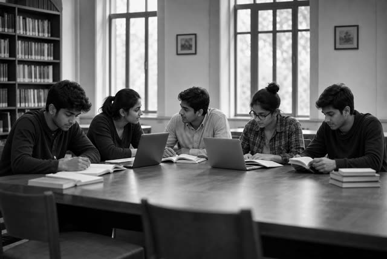
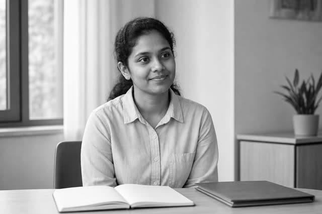

Vision
A trusted, sustainable pathway between Sri Lanka and Germany: candidates prepared properly, German partners who can rely on them, and families who know exactly what to expect at every stage.
Ceylon German Pathway is a Sri Lankan organisation preparing motivated young people for Nursing Ausbildung and professional healthcare careers in Germany - through ethical guidance, structured German language training and support that continues after arrival.

We don't just recruit students. We prepare them - and stay with them.
Ceylon German Pathway (CGP) is based in Wilimbula, Henegama, in the Gampaha District, and serves Sri Lankan students and families nationwide. We help motivated young people pursue vocational education and healthcare career opportunities in Germany.
Most people who come to us are asking the same question: “I want to build a healthcare career in Germany, but I don't know how to start, what documents I need, how to learn German, or how to handle the Ausbildung and visa process.” Our entire service is built to answer that question properly, in order, with someone accountable at each step.
That means candidate identification, German language preparation, cultural and professional preparation, documentation, partner interviews and selection, pre-departure preparation, and support once you have arrived in Germany.

Vision
A trusted, sustainable pathway between Sri Lanka and Germany: candidates prepared properly, German partners who can rely on them, and families who know exactly what to expect at every stage.
Mission
We prepare motivated young Sri Lankans for Nursing Ausbildung in Germany - through systematic German language learning, cultural and professional preparation and honest guidance - and we stay with them from their first enquiry to their working life in Germany.
Principles, not slogans.
2.1
Student welfare comes before placement numbers. We are honest about requirements, timelines and what the pathway does and does not involve.
2.2
Our fees and payment policy are written down and explained before you commit. No hidden charges at any stage.
2.3
We treat every student as a person building a career, not a file to be processed.
2.4
Our responsibility runs from the first enquiry through to integration support after arrival in Germany.
2.5
Your personal information and documents are handled carefully and kept secure throughout the process.
One pathway, eight stages.
From the first conversation in Sri Lanka to a training place in Germany - the same sequence for every candidate, and one that students, families and German partner institutions can all follow.
Please read: the two examples below describe how the CGP service model is designed to work. They are illustrative of our process - they are not accounts of specific completed cases, and no outcome is implied or promised. Real, verified case studies will replace them as they are confirmed.
“We don't just recruit students. We prepare and support them through the entire pathway - from candidate identification and German language preparation to partner interviews, pre-departure preparation, arrival in Germany and integration support - while building long-term relationships with German healthcare institutions.”
- The CGP model
3+
Years of experience
100+
Students guided
500+
Hours of German language training
24h
Average enquiry response time
Figures shown are working placeholders supplied for layout purposes and will be replaced with verified numbers before launch.
Prepared, guided and monitored - at every stage.
Eight commitments that shape how we work with every candidate.
Fragen? Ask us anything.